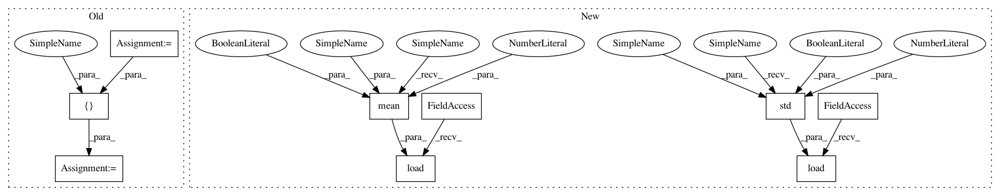

a9ae9989261da6aa85e452ace0c9915fe7c90d22,src/garage/tf/baselines/gaussian_cnn_baseline.py,GaussianCNNBaseline,fit,#GaussianCNNBaseline#Any#,256
Before Change
self._y_std.load(np.std(ys, axis=0, keepdims=True) + 1e-8)
if self._use_trust_region:
old_means, old_log_stds = self._f_pdists(xs)
inputs = [xs, ys, old_means, old_log_stds]
else:
inputs = [xs, ys]
loss_before = self._optimizer.loss(inputs)
tabular.record("{}/LossBefore".format(self._name), loss_before)
After Change
// recompute normalizing constants for inputs
self._x_mean.load(np.mean(xs, axis=0, keepdims=True))
self._x_std.load(np.std(xs, axis=0, keepdims=True) + 1e-8)
self._old_network.x_mean.load(np.mean(xs, axis=0, keepdims=True))
self._old_network.x_std.load(
np.std(xs, axis=0, keepdims=True) + 1e-8)
if self._normalize_outputs:
// recompute normalizing constants for outputs
self._y_mean.load(np.mean(ys, axis=0, keepdims=True))
self._y_std.load(np.std(ys, axis=0, keepdims=True) + 1e-8)
In pattern: SUPERPATTERN
Frequency: 3
Non-data size: 9
Instances
Project Name: rlworkgroup/garage
Commit Name: a9ae9989261da6aa85e452ace0c9915fe7c90d22
Time: 2020-07-10
Author: 31981600+yeukfu@users.noreply.github.com
File Name: src/garage/tf/baselines/gaussian_cnn_baseline.py
Class Name: GaussianCNNBaseline
Method Name: fit
Project Name: rlworkgroup/garage
Commit Name: a75ce18aabee2f97c65973dbbdf6ee3047f1f97a
Time: 2020-06-03
Author: ahtsans@gmail.com
File Name: src/garage/tf/regressors/gaussian_mlp_regressor.py
Class Name: GaussianMLPRegressor
Method Name: fit
Project Name: rlworkgroup/garage
Commit Name: 1d840df357282a675b8fce839bb0e5f72a8abba9
Time: 2020-06-21
Author: 31981600+yeukfu@users.noreply.github.com
File Name: src/garage/tf/regressors/categorical_mlp_regressor.py
Class Name: CategoricalMLPRegressor
Method Name: fit
Project Name: rlworkgroup/garage
Commit Name: a9ae9989261da6aa85e452ace0c9915fe7c90d22
Time: 2020-07-10
Author: 31981600+yeukfu@users.noreply.github.com
File Name: src/garage/tf/baselines/gaussian_cnn_baseline.py
Class Name: GaussianCNNBaseline
Method Name: fit